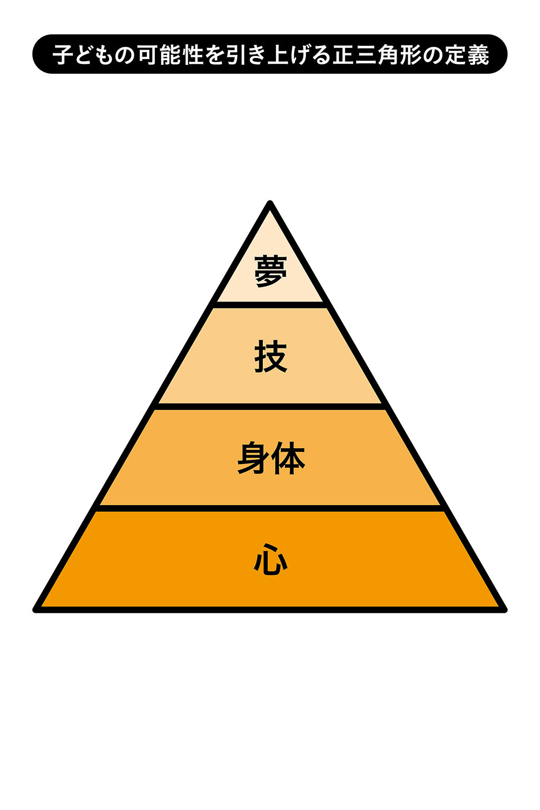
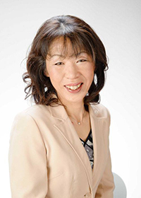

| あせかくへそじくの法則: 子どもの心の根っこを育てるエッセンス | |
| 齋藤 忍 | |
| dendenmushi shuppan (2018) | |
近頃、新入社員を迎える企業から、最近の若者は、「コミュニケーションが取れない」、「会話ができない」とよく聞きます。
たとえば、コミュニケーションを取るのには、あいさつが初めの１歩と一般的によく言いますが、現在は、あいさつさえも交わさない家庭が増えているそうです。
皆さんの家庭では、あいさつを交わしていますか？ あいさつはなぜ必要なのでしょうか？ また、あいさつをするかどうかで、子どもたちの未来へも影響することをご存知ですか？
子どもたちが自ら考え、行動する力を養い、可能性を伸ばして、最大限の力を発揮することを可能にしていくための方法となるエッセンスの１つにあいさつがあるのです。
また、あいさつだけでなく、日常生活の行動の中にも、子どもの未来に関わる要素が秘められていることを知っておいて下さい。
あなたは、お子さんにどのように育って欲しいですか？ お子さんは夢を持っていますか？ あなたは、何かお子さんに夢を託していますか？
親は子どもの未来を思い、知識や技量を付けさせます。それはとても大切です。が、せっかく付けた知識や技量も使いこなせなかったら宝の持ち腐れです。
身に付けた知識や技量を使いこなすには、それを使いこなすだけの心の器が必要になります。「できる」、「やってみよう」と思える心です。どんなことがあっても折れない心や自分で考え行動する力を付けること、そして、どんどんチャレンジして、多くの失敗を繰り返して学び、自分の可能性に大きな花を咲かせていくには、その花に見合った大きなしっかりした根っこが必要なのです。
本書では、筆者が考えた「あせかくへそじく」の法則を伝えています。心の根っこを育てるには、日常生活の行動の中に隠れているヒントを知ることが必要です。そして、子どもたちに、「あせかくへそじく」を伝え、実践し習慣化するのです。
筆者は、この「あせかくへそじく」の法則で、未来を担う子どもたちが社会に大いに貢献できる大人へと成長できる架け橋になっていくと確信しています。
本書では、脳の仕組みに基づいた実践法、そして、ワクワクする効果が得られる「あせかくへそじく」の法則を紹介します。
皆さん！ ワクワク感を親子で楽しんで実践をして下さい。本書を手に取って読んでいただけることに心から感謝致します。
そして、子どもたちの未来が幸せに溢れる社会になることを心から願います。共に学び共に成長できることに深く感謝致します。
２０１４年５月吉日
齋藤 忍
「あせかくへそじく」の法則とは一体何でしょうか。そして、「あせかくへそじく」の法則を実践することで、どのような効果を得ることができるでしょうか。
なぜ、「あせかくへそじく」の法則が子どもの心の根っこを育てるのでしょうか？ この章では、「あせかくへそじく」について詳しく解説していきます。
日常生活の中でいつも行っている８つの基本的な行動の頭文字を取り、筆者が考案した子どもの心の根っこを大きく育てるための法則が、「あせかくへそじく」です。
「あ」はあいさつ、「せ」は整理整頓、「か」は感謝、「く」は靴ならべ、「へ」は返事、「そ」は掃除、「じ」は時間、「く」はクリアリングを意味します。つまり、あいさつ、整理整頓、感謝、靴ならべ、返事、掃除、時間、クリアリングの８つの事項を意味します。更に、「あせかくへそじく」の法則とは、この８つを実践することに汗をかけば、へそに軸ができると掛けています。「腹が決まる」、「腹を据える」という言葉があるように、身体の中心の腹に気が集まることで、物事に集中する力、発揮する力が生まれてきます。心も同じように、「あせかくへそじく」を実践することで、心の核をつくり上げることができるのです。心の核ができると、ぶれない自分や揺るぎない自分になれて、自分自身を信じることができます。自分の未来の可能性を信じる力の根底になるのです。言い換えると、この法則を徹底することで、メンタル面が鍛えられ、意欲的、積極的に「夢」に向かい行動し、挑戦していくことが自然とできるようになるのです。
最近の子どもは、メンタルが弱いと言われています。子どもだけでなく大人もです。
私たちが小さな頃に、口うるさく言われて習慣化されたことは、振り返ってみると、とても大切だったからこそ、親は何度も何度も繰り返し習慣化してきたのでしょう。
しかし、私たちが大人になって、「あせかくへそじく」を次の世代にしっかり引き継いでいるかと言ったら、できていないのが現状です。何のために、「あせかくへそじく」が必要なのか、実行することの意味や意図を理解せず、軽視してしまっているのではないでしょうか？ ですから、学校でも職場でも、先生や上司が注意すると、親が文句を言ったり、次の日から来なくなったりしてしまう事態が社会問題になっているのです。また、トラブルなどを避けるために、注意することに躊躇してしまうのも、１つの要因かもしれません。アドバイスや１つの意見として言われたことですら、受け取れなくなってしまっている人が増えているのです。また、叱られることに慣れていないことにも原因があります。メッセージを伝える側にも伝え方の工夫が必要なのです。
本来、大人になるのに必要とされる昔からの〝躾〟という言葉が少し忘れられている現代では、大人たちが当たり前としていることを、子どもたちができなくて当たり前なのです。そのような環境で育っていないのですから。だからこそ、あいさつ、整理整頓、感謝、靴ならべ、返事、掃除、時間そしてクリアリングの「あせかくへそじく」の法則を実行して、子どもの心の根底、つまり根っこをつくる必要があるのです。
子どもの未来を思うのであれば、親は、「最近の子どもは、根性がない！ やる気がない！」と言うことをやめて、日頃のごくごく身近な事柄、あいさつ、整理整頓、感謝、靴ならべ、返事、掃除、時間、そしてクリアリングを実践する大切さを伝えていって下さい。どのぐらい突き詰めて実践するかで心の器の大きさが決まるのです。そして、心の器の大きさに等しい、どんなに辛いことや困難なことにも向かっていける心の筋力、心の根っこができ上がるのです。心の根っこがしっかりとでき上がれば、あとは、どんどん自分自身で伸びていけるのです。目の前の壁にぶつかっても、自ら考えて行動し、それを乗り超えて成長していけるのです。メンタル面も同時に強くなっていくのです。
では、この「あせかくへそじく」の法則を実践すると、具体的にどのような効力を得ることができるのでしょうか。次項で、１つずつ解説します。
＊ＰＯＩＮＴ＊ 何気ない生活習慣をきちんと見直すことで、心の根っこは育つ
子どもに何かを躾ようとするならば、まずは、親が見本を見せることが大切です。たとえば、男の子ならば、サッカーのキックやキャッチボールなど、小さな頃に初めてトライすることに対して、親が見本を見せて教えてきたことでしょう。また、子どもたちは、テレビなどで、見よう見真似で様々なことを覚えていきます。このように、子どもは真似ることが大得意です。だから、親が見本となるべき行動や実践をすれば、子どもはそれをどんどん真似ていきます。逆に、親がしないことは子どももしません。子は親の鏡とよく言われるように、親を見て育つのです。たとえば、親が扇風機を足で消す習慣があれば、子どもも同様にやるのです。
筆者が実際に、子どもは親や周囲をよく見ていると強く感じたのは、小さな頃に連れていった実家の花火大会の様子を子どもが絵に描いたときでした。
筆者の実家で行われる花火大会は、都会とは違い、シートを敷いて寝転がって見る人が多いのです。子どもにとって初めての花火大会だったので、子どもはそういうものだと認識したのでしょう。授業参観に出掛けたとき、わが子が夏休みの思い出として描いた絵は、花火でなく、人が寝ている絵だったのです。
このとき、「あ！ 子どもは本当によく見ているんだ」と感じました。前述したように、子どもは真似ることが大得意です。だから、親の習性や癖をそのまま受け継いでいくのです。子どもは親の思った通りには育ちません。親のように育ちます。このように、子どもは、大人たち、親がやっている通りにやるのです。ですから、子どもが「やらない」、「できない」と嘆く前に、親である私たち大人が、自ら行動し、実践していけば、子どもは、おのずと当たり前に行動し、実践していくのです。行動だけではなく、発する言葉、表情もそうです。物の考え方、捉え方、すべてにおいて同様なことが言えます。親であるあなたが、子どもに自分のことを大切にして欲しいな、と思うのであれば、自分が自分の親を大切にするのです。お年寄りを大切にするのも同じで、自分の祖父母を大切にするのです。日本の伝統を守りたければ、きちんと、日本の習わしや季節ごとのイベントを行えば、子どもたちも成長したらきちんとするはずです。日本の良さだけではなく、父親や母親の良い所や様々なものに対しても、良い物の見方をするのか、はたまた、悪い所ばかりを見て否定するのかによっても子どもの未来は違ってきます。
子どもは、親をきちんと見ています。子どもの目は鋭く、大人である親のことを真似します。私たちは、子どもたちにとって、人生の先を行く先輩であり、見本であると自覚していきましょう。
＊ＰＯＩＮＴ＊ 子どもを批判する前に、親が見本になってやってみせる
なぜ、人間の器、心の根っこを育てるのが大切なのでしょうか？
親は子どもたちの可能性を広げるために、知識や技量を身に付けることに一生懸命に力を注ぎます。もちろん、それはとても大切です。しかし、身に付けた知識や技量を活かすことや、発揮することができなかったらどう思いますか？
たとえば、算数の問題の解き方を先生に習ったとしても、子どもが実際にその問題を「解いてみよう！」、「やってみよう！」と思わなければ、問題を解くのに力を発揮することができません。
また、逆上がりのやり方を一生懸命教えても、「やってみよう！」、「できるようになりたい！」と思わなければ、逆上がりができるようにはなりません。たとえ、やることに挑戦しても、心がそれについてこなければ、途中で諦めてしまうことでしょう。
では、知識や技量を活かし、発揮し、子どもが、「やってみよう！」、「できる！」と行動できる力を養うにはどうしたらよいのでしょうか。
それには、心の根っこをしっかり育てることが必要になります。たとえば、大きく育った木には、根っこがしっかりと張っています。深くて太い根の木は、どんな強風にも倒れませんし、揺るぎません。反対に、成長した木でも、根があまり大きく育っていなければ、ちょっとした風や害虫で倒れてしまったり、枯れてしまったりします。しかし、根っこがしっかりと育っていれば、おのずと木は成長し、綺麗な花や実を付けます。そこには鳥や動物が寄って命を育みます。
人も同じです。私たちは、見えている部分や成果、結果ばかりに目を奪われ、それを評価しようとします。思うような成果や結果が得られないと、一生懸命にそれを取り繕います。しかし、枝葉を付けること、つまり、表面だけの見栄えを整えることよりも、一生懸命に根を育てることに意識を向けることが大切なのです。多くの親は、とかく他人と比べて、「うちの子はできていない」と評価してしまいますが、根っこが育っていれば、その子に適した時期に、必ず花は咲くはずです。じっくりとその時期を待つことも必要です。
親は、「立」つ「木」から「見」る、と書きます。この漢字のように、子どもを見守ることが親の仕事です。ついつい口も手も出したくなるのが私たち親ですが、忍耐力を持って子どもを見守っていくことが、子どもの心の根っこを育てることになるのです。
特に最近は、大人が早く芽を出せ、早く花が咲けと子どもたちを急かし、じっくりと根を育てるチャンスを奪っているのではないでしょうか？ 親が子どもの見えていない部分をいかに大切にするかで、子どもの可能性は広がります。
今の結果より未来への可能性を広げることを大切にし、未来のために今実践をしましょう。心の根っこを育てれば、きっと、あなたの子どもは人間の器が大きな人へと成長します。そして、どんなことにも諦めず、何事にもチャレンジし、自分の能力をどんどん発揮する粘り強い心を持つことができるでしょう。
親にとって、子どもが小さな頃から、自分の価値や生きている価値をしっかりと心に根付かせてあげることは特に重要です。人は、存在価値が見いだせなくなると、生きていることに価値を見いだせなくなり、「自殺」などの悲しい結果を選択してしまうこともあるかもしれません。生きていく、生きていることに存在価値を子どもが実感できるように、「生まれてきてありがとう」、「あなたに会えて嬉しい」と子どもの存在を認め、肯定していきましょう。これが、子どもにとって、人として生きていく中での根っこになるのです。この根っこがないまま大人になっていくと、「できない」、「自信がない」と何かあった途端に、心が折れてしまう要因の１つへとつながってしまうのです。
心の根っこが育っていれば、自分も他人も肯定し、自分が好き、人が好き、自分は「できる」と、自分自身を信じられる人になるでしょう。心の根っこは、その人の可能性をつくり出す大きな宝箱なのです。これをつくっていけるのは親です。親が育ててあげることで、子どもの大きな力の源になるのです。
こう述べると、人間の器、心の根っこを育てることが難しく感じる方もいらっしゃるかもしれません。しかし、特別なことでもなんでもないのです。普段の生活の中にあるごくごく身近なことを大切にして、丁寧に扱っていくだけです。ただ、そこにこそ、大きな意味があることを知っておいて下さい。
たとえば、「抱きしめる」、「大好き」、「愛している」、「にっこり笑う」などの動作や言葉掛けが、心の根っこの核となり、栄養源になります。親が子どもに、自分が存在している意味や意義を植え付けることはとても大切なことです。子どもの自殺が増えているのは、やはり存在意義を親から教えられていないからです。この自分が生きている存在価値の根っこの核となるものを植え付けるのは、親の役割であり、責任であると認識して下さい。
「生まれてきてくれてありがとう」、「私を選んで生まれてきてくれてありがとう」、「あなたが居てくれて私は幸せ」と言葉や動作、表情でどんどん伝えてあげて下さい。これを繰り返して、存在価値を子どもの心に根付かせましょう。子どもには、親の愛の栄養をたくさん与えて、育てていきましょう。
また、よく褒めて育てると良いと言います。しかし、実際には、褒め方がわからない、どこをどのように褒めていけばよいのかわからない、褒める所がない、と言う親もいます。何かが「できた」ことを褒めようとすると、褒められないのです。
子どもを褒めるコツは、子どもの感情や存在を認めることです。たとえば、「そんな風に感じたんだ。凄いね」、「笑顔がかわいいね」、「そのポーズ決まってる！」、「髪切ったんだ！」、「学校行ってきたんだ」といったことでよいのです。つまり、子どもの存在を認めればよいのです。子どもが感じたことや言ったことを認め、親はそれを受け止めるのです。
また、子どもの価値観を親が受け入れ難いこともあるかもしれません。なぜならば、人は、相手が自分の価値観と違うと受け入れることができず、否定してしまいます。人それぞれ価値観が違います。親子でも価値観は違います。だから、それを受け入れる必要はありません。受け入れるのでなく、受け止めるのです。「そうなんだ！」、「そんな風に考えているんだね」と子どもの思いを、そのまま存在価値として認めればよいのです。このように、子どもの心に存在価値を植え付けていけば、ますます心の根っこが育ちやすい土壌ができていくことでしょう。
そして、この土壌の上に、心の根を育て、自ら考えて行動し、様々なことにチャレンジし、どんどん自分の力を発揮できるようになれる実践法が「あせかくへそじく」の法則なのです。
＊ＰＯＩＮＴ＊ 「あせかくへそじく」の実践で、子どものチャレンジ力、発揮力が育つ
「あせかくへそじく」の法則の具体的なお話に入る前に、子どもの可能性を引き上げる正三角形の定義に触れておきます。
周知の事実ですが、正三角形は３辺の長さが等しいです。頂点を高くしようとすれば、底辺の長さを長くしなければ、正三角形にはなりません。すなわち子どもの可能性を引き上げるとは、底となる土台をしっかりさせることが大切です。

つまり、この土台になるのは「心」です。その上に、身体、技、そして、夢が重なります。この４つが図のようにバランスがうまく取れれば、自己実現ができるのです。この子どもの可能性を引き上げる正三角形の定義を理解していれば、結果ばかりを求めることなく、結果を出すための過程で何をしたらよいのかが明確になってくるはずです。すなわち、子どもの実力を発揮させたい、自ら行動をして欲しい、目標を持って欲しいなどの思いを実現するには、まず心が成長していなければならないのです。心が成長すれば、この三角形の定義通りに、自ら夢や希望を持ち、それにふさわしい身体や技を付け、行動を起こしていくことができるのです。ですから、親がすべきことは、未来に夢や希望が持てるように促し、それに見合うだけの心づくりをすることです。
よく「目標を持ちなさい」、「夢を持ちなさい」と言いますが、言うのは簡単です。が、実際に、目標や夢を持っている子どもたちが少ないのも事実です。それだけ、親が子どもの心を育てていないのです。そんな今の子どもたちのことを「やる気がない」、「辛抱が足りない」、「集中力がない」、「根性がない」などと一般的に言いますが、子どもたちに目標や夢がないわけではありません。また、やる気や根性などもきちんとあるのです。現実は、親が見えなくして、消去してしまったのです。子どもは小さな頃に「私○○になる！」と夢を必ず言っていますし、歩く、走る、自転車に乗ることに対して、やる気や根性を出して、並大抵ではない努力をします。一方、大人たちは、「やってられない」、「疲れた」、「政治家は......」、「無理」、「無駄」と様々な言葉を吐き、未来に希望を持てなくなってきてしまっています。
前述したように、子どもは、親を真似します。今一度、親としての自分を振り返ってみましょう。
大人たちがいきいき毎日楽しく仕事をしている姿を見せていますか。
家庭でお母さんは、お父さんを尊敬していますか。
大人っていいなって子どもが思える姿を見せていますか。
自分のしている仕事に誇りを持って語っていますか。
未来は素晴らしい、日本は素晴らしいなどと生まれてきたことに価値を見いだす言葉を使い、行動をしていますか。
今の子どもの現状は、大人である親たちが子どもたちに見せてきた姿や発してきた言葉、行動をすべて反映しているのです。そう考えると、やはり、親は子どもの行く道の手本となる存在であらねばいけないと感じずにはいられません。親たちは、仕事が楽しく、未来に「目標」「夢」を持ち、それに向かっていく姿を見せることの大切さを、今一度確認していくことが必要です。
子どもに未来を託すのであれば、お手本となる生き方をしなければならないのが、親の役割です。親は子の手本です。「あんな大人になりたい」と憧れ、尊敬される存在にならなければならないのです。家庭で「お父さんみたいにならないようにね」、「お母さんみたいな人とは結婚するな！」などという言葉を決して吐いてはならないのです。嘘でもいいので、「お父さんが居てくれるから家族がご飯が食べられる」、「お母さんのおかげでみんなが生活できる」と言うべきなのです。心で思ってなくてもいいのです。そして、家庭での父親と母親それぞれの役割や互いの存在を認めることや、相手を尊重、尊敬できる言葉を発する会話ができることが望ましいです。そのような家庭を築いていこうとすることに目を向けることで、子どもの心の根っこに土壌をつくることができるのです。
また、日頃、何気なく発する言葉にも注意をして下さい。たとえば、「無理」、「でも」、「だって」、「どうせ」などの否定的な言葉です。これらの言葉は、一気に人がやる気を失くす言葉です。そして、子どもの未来の可能性を潰してしまうような発言です。
子どもが大人を見て、未来に夢や希望が持てるかっこいい大人の姿を見せることこそが、子どもたちの心の根っこを大きく育てる「あせかくへそじく」の法則を実践するための土壌づくりとも言えるでしょう。
よく肥えたフカフカで栄養のある土壌に種をまくとよく育つ植物のように、子どもの可能性を引き上げる正三角形の底辺となる心に、大きくしっかりとした根っこを育てることを、親は最も重視しなければなりません。同時に、子どもの未来の可能性を引き上げる正三角形の頂点を、親が引き上げて、大きな夢を持たせてあげることも重要なのです。
＊ＰＯＩＮＴ＊ 心が大きく育てば、子どもは大きな夢を持つ
ここからは、「あせかくへそじく」の法則を１つずつ具体的な効力と実践法について述べていきます。ただ最初に、本来ならば「あ」から行きたいところですが、「あせかくへそじく」の最後の文字である「く」について述べたいと思います。「く」はクリアリングを意味します。「あせかくへそじく」の中でも、このクリアリングをまず大切にして欲しいからです。
クリアリングは、心をスッキリとクリアにすることです。たとえば、心がざわついて、イライラしている状態を想像してみて下さい。そんなときに、人の話に耳を傾けて、気付きを得ることができるでしょうか？ 何かを吸収したり、挑戦したりする気になれるでしょうか？ 何をするにしても、まず、心が落ち着いていなければ集中ができません。
たとえば、畑で野菜を育てるときは、種から芽が出やすく根が張りやすい土壌づくりをするために畑を耕します。この「く」が意味するクリアリングこそが、畑を耕すことであり、心の根っこをつくる土壌、土台になるものなのです。つまり、クリアリングして、根っこが育ちやすい心の土台を整えることが大切なのです。クリアリングは心だけでなく、脳をスッキリさせるという効果もあります。脳がスッキリすると、心がスッキリして、感情がプラスに作用するのです。だから、クリアリングを一番大切にして欲しいのです。
では、一番大切なのになぜ、「あせかくへそじく」の文字の中で最後にしたのかというと、このクリアリングは、終わりよければすべてよし！ の言葉でもあるからです。いろいろ嫌なことがあった日でも、１日の最後に心をクリアリング、つまり、クリアにして、明日に備えるのです。言い換えると、新たな成長のために、心を整えるのです。
＊ウツを促すのは自律神経の乱れが原因
あなたのお子さんは、素直ですか？
集中して何かに取り組むことができていますか？
イライラしたり、キレたりしやすくないですか？
現代は、ストレス社会と言われ、多くの方が毎日ストレスを感じながら生活をしています。うつ病を悩ませる多くの原因もストレスと言われています。テレビや新聞では、毎日のように、殺人や自殺、自然災害、経済、社会問題といった様々なマイナスのニュースが溢れかえり、普通に生活しているだけでも、私たちはストレスを受けています。それに加えて、パソコンや携帯、ゲーム機から受けるバックライトの影響や、頭を下げた状態での使用が長く続く生活にも要因があります。こういった環境が原因で、人は素直になれなかったり、集中することができなかったりするなど、イライラし、キレやすくなると言われています。これは子どもでも同じです。
これらは、自律神経の乱れが原因しています。特に、現代の環境下では、自律神経を乱しやすいでしょう。自律神経は、交感神経と副交感神経から成り立ちますが、ストレスを受け続けると、交感神経ばかりが優位に働いてしまって乱れてしまいます。わかりやすくたとえると、車で常にアクセルを踏み続けている状態です。そうすると、副交感神経が働かなくなり、アクセルを緩めることができない状態、つまり、心がリラックスできない状態になってしまうのです。すると、交感神経ばかりが優位に働き、副交感神経が働かないまま、脳内でつくられ、安らぎを与えると言われるセロトニン物質が分泌されなくなってしまうのです。これがうつ病につながっていくと言われています。
この自律神経の乱れは、様々な病気を引き起こす原因にもなります。また、春の陽気に自律神経を乱す人はとても多いです。春は、１年のうちでも一番身体が不調になりやすい季節です。なぜならば、春の陽の気が頭にのぼってしまって、ふわふわ落ち着かない状態になるからです。それに加えて、入学や進級、新生活を始める新社会人が迎える新たな環境や、また新しく人が加わることで人間関係にも変化が出て、気を遣い緊張する場面が増えるのです。普段以上にストレスが多くかかることなどで、自律神経が乱れやすくなるのです。
＊自律神経の乱れは呼吸で整う
では、このようにストレスがかかる季節や環境の中で、乱れた自律神経のバランスを、どのように整えていけば良いのでしょうか。
ヒントは、「呼吸」です。私たちの普段の「呼吸」を整えていくのです。
多くの人は、無意識になってしまっていますが、私たちは、日頃息を吸い過ぎていることをご存知ですか。息を吸ったら吸ったまま、しっかりと息を吐けていないのです。イライラしてキレやすい人は、大抵は、呼吸が浅く、速くなっています。興奮している人も同じです。呼吸が浅く速い状態は、肺の中に古い酸素が残ってしまい、新しい空気を肺に取り込めない状態になってしまっているのです。誰でも空気が淀んでいる環境で過ごすより、空気の綺麗な所で過ごした方が気持ち良いと思うのと同じです。自分の身体の中が淀んだ空気に満たされていたとしたら、健康に害を及ぼすことは容易に想像できます。逆に、身体の中が新鮮な空気で満たされていれば、良い発想も浮かび、やる気も出て、気持ち良く過ごせるはずです。それには、しっかり息を吐き、新しい新鮮な空気を身体にたくさん取り入れることが必要です。この呼吸をしっかりとすることで、体内のバランスが取れていくのです。
＊腹式呼吸で呼吸を整える
体内のバランスを整える呼吸は、深くてゆっくりとした腹式呼吸法で整えることをおすすめします。腹式呼吸をすることで、副交感神経がしっかりと働けるようになります。つまり、呼吸で自分自身をコントロールできるのです。また、呼吸は私たちの意思でコントロールすることができます。普段から深くてゆっくりした呼吸を意識していけば、自律神経のバランスが整ってきます。呼吸が整うと、脳内からセロトニン物質が分泌されリラックスができ、心が整うのです。
この呼吸で、１日の疲れやストレスはその日のうちに解消し、心をクリアリングするのです。ストレスをためるのは、大人だけでなく、今の子どもたちも同じです。学校や塾で分刻みの様々なスケジュールをこなしている小学生も多くいれば、夕飯も家族と食べる時間が取れない子ども、あるいは、家庭に問題がある子どももそうでしょう。１日の疲れやたまったストレスをクリアしてあげられるのは親です。
具体的なクリアリングの方法は後述しますが、親子間で、もう１つとても大切なものがあります。それはスキンシップです。皆さんは、お子さんや家族とスキンシップがありますか？ 子どもにとってスキンシップはとても重要で、これがなくなると子どもは生きていけなくなるほどです。私たちは、赤ちゃんをあやすときや泣いている人、落ち込んでいる人に無意識で身体をさすります。この手のぬくもりや触れ合いが、子どもにとって、どんな言葉よりも大切なのです。子どもが大きくなるにつれて、スキンシップもなく、家族と触れ合う機会がなくなっているのならば、すでに、子どもが素直になれない、集中できない、安心できない環境をつくり出していることに気付きましょう。子どもが安心して過ごせる環境をつくり出すのが大人の役割だと認識すれば、ほとんどの問題は解決していけるはずです。
子どもが安心して居られる環境づくりこそ、心の根っこづくりの土台になります。ここで言う環境とは、物や住まいのことではなく、子どもの居場所があるかどうかです。ここに居ても良いという安心感が得られる自分の居場所が、子どもには必要なのです。
前章でも述べましたが、「言葉」や「スキンシップ」で子どもの存在価値を承認するのです。「あなたはここに居ていい」、「あなたは価値がある」、「生まれてきてくれてありがとう」、「あなたが居てくれるのが嬉しい」と言葉やスキンシップで伝えることで、子どもは安心するのです。
友達や先生との関係や勉強などの様々な体験、経験をする毎日の中で、もし、子どもの心が誰かに否定されていたとしたら、子どもは、ストレスを感じて自分には存在価値がないと思い込んでしまうこともあります。それでも、毎日家に帰ると自分の居場所があり、自分のことを承認してくれる人が居れば、子どもは救われます。子どもにとって、安心できる居場所があることはとても大きなことです。
次項で説明するクリアリングを実践して、子どもの心の土台を育てていきましょう。
＊ＰＯＩＮＴ＊ 深くゆっくりとした呼吸で心をクリアにしよう
＊幼い子どものためのクリアリングの実践
クリアリングを実践することで、１日１日をステップアップさせながら成長することができます。１日にあったことは、その日にクリアにして、今日１日の良かったことや改善することを明確にして、更なる自分の成長に活かしていくのです。
クリアリングは、次への準備力や切り替える力とも言えます。たとえば、夜寝る前に、台所を整理整頓してスッキリさせ朝を迎えるのと、片付けないまま朝を迎えるのとでは、翌朝どちらがスムーズにことが進められるのかは明らかです。また、夜寝る前に、怖い映画を見てそのまま寝ると、怖い夢を見たり、トイレに行けなくなったりします。夫婦喧嘩をしたまま寝てしまうと、朝起きたときに無性に腹が立ち、昨夜より怒りが増していることもあるでしょう。
これらは、脳の仕組みや性質によるものです。脳は寝る前の一番後を記憶する性質を持っています。脳は寝ている間に何回も繰り返し出力（言ったこと、思ったこと、書いたことなど）を繰り返します。そのため、寝る前をどう過ごすかが大切なのです。たとえば、サラリーマンの飲み会では、会話に「部長に腹立つ！」、「だからダメなんだ！」などなど愚痴や不満を口にし、そのまま家に帰り眠りに付くと、翌朝に、その愚痴や不満が増幅します。これでは、良い仕事ができるはずもありません。
逆に、夢や希望を語り未来に向けて幸せになる話をして眠りに付いたら、脳はそのイメージを植え付けますから、朝、やる気一杯で行動的になれるはずです。
だからこそ、子どもが安心して過ごせる夜の環境づくりがとても大切になるのです。１日にあったことを親がきちんと聴いて、１日のことを整理整頓し、子どもの脳をクリアにするのです。そして、必ず最後は承認して、存在を認めてあげるのです。子どもに優しく「こうするともっとよくなるね」などと、未来に希望が持てる言葉が掛けられるのが理想です。
そして、ゆったりとお風呂に入り、リラックスできるヒーリング音楽やアロマなどの香りを活用するのです。また、寝るときは照明を落として、真っ暗にして下さい。そして、子どもの自律神経を落ち着かせるためにも、ゆっくり背中をさすったり、手の甲をさすったりしてあげます。
こうすることで子どもは安心してぐっすり寝ることができ、朝スッキリと目覚めることができます。
この、子どもへのクリアリングは、睡眠障害を訴える子どもにも有効です。やはり、呼吸が鍵になるのです。子どもがなかなか寝付かないのであれば、前述したように、子どもの呼吸を自然に深くゆっくり整えてあげましょう。
このようにクリアリングすることで、副交感神経（リラックスホルモン／セロトニン）が優位に働き、子どもはリラックスして眠りに付くことができるのです。
もし、母親であるあなた自身が睡眠障害で悩んでいるのであれば、呼吸を自分でコントロールしていきましょう。まず、鼻からゆっくり息を吸い、その２倍から３倍の長さを細く長く吐き切ります。息を吸うときには、良いものが入ってくるイメージをし、息を吐くときにいらないものを全部吐き出すイメージをしましょう。子どもと一緒にこの呼吸を楽しむのもおすすめです。
また、親がしている呼吸を子どもも一緒に行うと、自然に互いの息が合ってきて、より子どもとの関係を向上させることができるようになります。双方がクリアリングでき、きっとすがすがしい気持ちで朝を迎えることができるでしょう。
もちろん、１日で結果が得られるわけではありません。是非、習慣化して下さい。寝る前の５分をゴールデンタイムにして、良い気持ちで眠ることを習慣にしたら、未来が必ず変わります。子どもの心に寄り添い、スキンシップを取ることは、毎日の忙しい中では時間が取りにくいかもしれません。しかし、スキンシップもなく、心もクリアリングができていない子どもは、将来、人とうまく交流が図れない可能性が高まります。
子どもが将来、自分で自分の人生を切り開き、社会に貢献できる大人へ成長するには、クリアリングは必要不可欠なのです。人との関わりなくしては生きてはいけません。大人になっても一番悩むのは人間関係です。子どもが将来、人生のコマをうまく進めていくための原点はやはり親にあります。
夜、寝る前の５分でいいのです。話を聴く、スキンシップを取る、腹式呼吸をする、これだけでいいのです。
もし、子どもが少し大きくなっていて、お互い触れることに抵抗がある場合の１つの方法として、指ヨガ（龍村式指ヨガ手のひらセルフケア協会）をおすすめします。これは、指先をマッサージすることで、心や身体、脳を整え、リラックスして最高集中状態の脳をつくることができます。筆者自身もマスターインストラクターとして、多くの方の手をケアしておりますが、このような方法もおすすめします。リラックスしているときの脳波は、最高集中状態の脳波と同じです。リラックスしているときにこそ、良い言葉掛け、未来へ希望が持てるプラス発言をしてあげるとそれをしっかり受け止めることができ、プラスイメージが持て、行動できるようになっていくことでしょう。
＊小、中学生の子どもへのクリアリングの実践
クリアリングは、勉強などに集中できる状態をつくるのにも活用できます。よく「うちの子は集中力がなくて」と悩む親がいますが、集中力は、呼吸でつくり出すことができることを知っておいて下さい。呼吸でリラックス状態をつくり、１点を15 秒ほど見つめるのです。集中できていないのは、目の焦点が合っていないのです。１点を見つめることで集中力が湧きます。これで集中状態をつくれます。また、姿勢とも関係が深いです。腹式呼吸は背中が丸くなっていてはできません。集中を持続させるには、姿勢を正すことが大切なのです。姿勢が崩れてくると、内臓が圧迫されます。内臓が圧迫されると集中力が切れると言われています。姿勢を正し、深くてゆっくりした呼吸をすることで、ゆったり落ち着いて集中できる状態をつくれます。
また、子どもが自分と向き合えるようになったら、おすすめなのは、今日１日あったことの良かった点、改善点を分析して、解決策をノートに書かせてみることです。１日にあったことを整理して、スッキリさせて寝ることをすすめましょう。要は、日記のように毎日のことを書けばいいのです。話すのと同じように出力して、クリアにさせるのです。そして、子どもには「良いことは益々向上させ、良くなかったことは改善できる方法を考えて、ノートに書いて次の日から改善できるように心掛けていく」ことを伝えてあげて下さい。また、ノートに書くことは、不要なことは忘れてしまう作業とも言えます。
ただし、ノートを使ってクリアリングすることを伝えるとき、１日の反省をしなさい、と言ってはいけません。一般的に反省と言うと、ここが悪かった、あそこが悪かった、あーすれば良かったと、自分の愚かさを認めてしまうことにつながります。これでは、次につながらないのです。これからどうしていくのかを考える機会を与えなくてはならないのです。１日の出来事をノートに書くのは、今日のことを活かして更に成長につながる材料にしていけるように、１日に起こったこと、したことをどう捉えてどうしていくのかを考えるためだと教えましょう。
また、この作業を１日の終わりにするように習慣化していきましょう。少し難しく感じるかもしれませんが、単純に、寝る前に明日はこうしていこう！ とプラス発想に切り替えることができればよいのです。嫌なことは、呼吸と共に吐き出し、「明日はもっといいことがありそう」、「私って素敵」など良い言葉と共に、息を吸って自分の中に取り入れていくことを伝えましょう。
このように、クリアリングは、１日の最後に１日にあったことをクリアにして、今日より明日へと成長できるための心と身体の準備をすることです。根っこを育てるためには質の良い栄養が必要です。良い栄養をたくさん吸収する土壌づくりは、もっと必要です。そのために、クリアリングが最も大切なのです。
これが、子どもが安心して過ごせる環境をつくることへつながるのです。
＊ＰＯＩＮＴ＊ クリアリングは、明日へのステップアップにつながる
第２章では、「あせかくへそじく」の法則の中でも最後の「く」、１日の最後に心をクリアにする、クリアリングについてお伝えしました。ここからお伝えするのは、「あ」あいさつ、「せ」整理整頓、「か」感謝、「く」靴ならべ、「へ」返事、「そ」掃除、「じ」時間の具体的な７つのテーマについて効力と実践法をお伝えしていきます。
これらはすべて、「クリアリング」で豊かな心の土壌を整えてこそ、大きな効力を発揮します。
＊あいさつの効力
「あせかくへそじく」の「あ」は、あいさつを表します。では、あいさつをすると、どのような効力が得られるのでしょうか。
あいさつは、相手や周囲の人の心を開く鍵とも言われ、コミュニケーションの始まりとなるものです。ですから 第１の効力は、コミュニケーション力が養えることです。他にも、相手と真正面に向き合う力、自分とも向き合う力、場の空気、環境をつくり出す力などが養われます。
皆さんの家庭では、夫婦や子どもときちんとあいさつをしていますか？ 「おはようございます」、「いってらっしゃい」、「おかえり」、「ただいま」、「おやすみなさい」など１日のうち、家庭の中であいさつをどのぐらい交わしますか？
あいさつを交わしていない方は、朝はすれ違い、夜もすれ違いかもしれません。それでも、家族の中で誰かには会うはずだから、どこかであいさつはしていることでしょう。
ただ、家庭内では、あいさつがなければないで、さほど問題にはなりません。しかし、家庭内であいさつを交わす習慣がなければ、子どもは外でのあいさつをまずしないでしょう。学校の部活動やスポーツクラブ、武道などで徹底的にあいさつを仕込まれることがない限りは、家庭でのあいさつが交わされていない子どもは、あいさつをしないのです。あいさつをすることを知らないのです。
あいさつを大切だと認識している人は多いのですが、なぜ、あいさつが大切なのかと考える人は少ないようです。なぜ、あいさつが大切なのでしょうか。
近頃、企業の方が口々に、「入社して来る新入社員と、とにかくコミュニケーションが取れない」、「会話にならない」と言っています。これは、個人で済むとは思えない社会現象の１つとして考えるべき問題ではないでしょうか。特に、その問題の１つとして、家庭や学校や地域で、きちんとあいさつが交わされていない現状があったのではないでしょうか。近頃の若者の親として責任を感じている筆者は、このあいさつの重要性をより感じるのです。
あいさつはコミュニケーションを円滑にし、相手と仲良くなるための１つの手段です。企業の上司や部活の先輩、学校の先生、近所の年配の人から「部下があいさつしない」、「後輩があいさつしない」、「生徒があいさつしない」、「子どもたちからあいさつしてこない」との声を聞きますが、その答えは「あいさつする習慣がないからできないのです」と言いたくなります。
これは、〝しない〟のではなく、習慣化されていないため〝できない〟のです。習慣化されている人は、「当たり前」であっても、習慣化されていない人には「当たり前ではない」のです。あいさつをするのは、当たり前だろ！ と叱る前に、〝見本〟を見せるのです。だから、私はこのような話を聞いたときに、「こちらからしましょう」と提案します。自分からあいさつをするのです。それも満面の笑顔で「おはようございます」と。もし、あなたがこのように笑顔であいさつされたら、あいさつを返すはずです。まずは、自分から実行しましょう。子どもの心の根っこづくりだけではありません。あいさつは先手必勝です。あいさつは先にしたものが得をします。
＊あいさつの実践法
では、あいさつの実践法を説明しましょう。
あいさつは相手の目を見て行うものです。相手の目を見て、相手と真正面から向き合う心づくりをするのです。足のつま先までも、まっすぐ相手に向けます。いざというときは、真っ向勝負ができ、逃げない心を培うことができます。
「おはようございます」と発してからお辞儀をします。このとき、相手に笑顔と声を届けてから頭を下げます。マナーではないのですが、はっきりとした声、笑顔、目線を合わせることが重要です。頭を下げながらのあいさつでは、なかなか自分の思いは伝わりません。せっかくのコミュニケーションの鍵が開きません。心に届く、相手の心の窓をオープンにするあいさつは、声と笑顔と目線です。
また、あいさつの効力を更に活かすには、声のトーンを少し高めにして言うことをおすすめします。たとえば、朝一番に「おはようございます」とぼそぼそと下を向いて小さく、低い声であいさつをしたときのことを考えてみましょう。このようなあいさつで、コミュニケーションが円滑に始まると感じますか？ また、このようなあいさつが周囲に与える影響を考えてみて下さい。周りが元気になりモチベーションが上がり、やる気になるという状況はつくり出せません。ですから、基本、あいさつは、トーンは高めに言います。滑舌、発声、はっきりとその場に適した声の大きさで、飛び切りの笑顔で相手の目を見て、あいさつしていきましょう。
また、朝一番のあいさつだけではなく、「ありがとうございます」、「いらっしゃいませ」など様々なあいさつも同じです。気持ちのよいあいさつは、周りがどんどん変わってきます。ただし、状況によっては、元気なあいさつができないこともあります。ですから、あいさつは、場を察する力も付くのです。
あいさつは相手や周囲の心を開く窓です。自分をオープンにして、相手と心を通わせ、自分とも真正面に向き合う心の根っこをつくっていきましょう。
＊ＰＯＩＮＴ＊ あいさつは、相手の心を開く鍵。「明るく、笑顔」で自分から！
＊整理整頓の効力
「あせかくへそじく」の「せ」は、整理整頓を表します。物を使ったら、あった場所に戻す。そして、使いやすいようにわかりやすいように片付けておくことが整理整頓です。使おうと思ったときにすぐに取り出せ、必要なときに必要なことがささっとできるようにしなければなりません。
このように、整理整頓することは、必要なときに必要な力を発揮できるようになります。きちんと整理整頓されていることは、心を落ち着かせることができ、常に平常心で居られます。整理整頓は、部屋の整理だけでなく、心も整理整頓できるのです。常に心が整理整頓されていれば、いざというときも慌てることなく居られます。逆に、散らかっていれば、心も乱れ、いざ物が必要になったときにすぐに見つからず、慌てふためいてしまい、時間もロスしてしまいます。普段からきちんと片付けておけば、いざというときも効率良く物を取り出せるのです。
これは、物だけではなく事柄も同じです。今日やることや予定管理など、様々なことを整理整頓しておかないと、結局、何もやれていない、やることを忘れた、となり中途半端になってしまうのです。これでは、自分の力を発揮することができません。物を整理整頓し始めると、事柄も整理整頓できるようになります。本当に必要なことを、優先順位を付けて効率良く進めることができるようになります。
＊整理整頓の実践法
筆者が初めて就職したのは、トヨタ系列の会社でした。トヨタ系列の会社は、整理整頓がとても良くされていることは、よく知られています。入社して初めて手渡されたのが薄いスポンジでした。何に使うのかとびっくりしました。最初の仕事は、事務机の事務用品の居場所をつくることでした。たとえば、はさみ。はさみの形にスポンジを切り抜くのです。定規、クリップなどもそのようにして、居場所を決めるのです。使ったらそこに戻すのです。ですから物がないことも一目でわかるのです。欲しいものが一目でわかりすぐに取り出せるから、効率良く仕事をこなすこともできます。事務用品ならば、多少は紛失しても危険に冒されることはありませんが、危険を伴う道具などではとても重大なことになります。
このように、整理整頓とはきちんと物の居場所を決めておくことです。物事も分別してグループに分けておくのです。仕事やプライベート、家族に関することもきちんと仕分けしておけば、更に細かく分けて整理整頓することができます。家庭でも台所用品は台所に、子ども部屋には子どもの物を置くように、きちんと分別されていればいいのです。脳の中も同じで、きちんと分類して整理整頓されていれば、欲しいときに欲しい情報や知識をさっと引き出すことができるのです。
日頃の生活の中で、整理整頓の習慣を付けておくと、臨機応変に、冷静に落ち着いてその場に適した対応や行動ができるのです。物や事の居場所を決めて常に整理整頓の習慣を付けていきましょう。そして、子どもにも本当の意味での整理整頓を教えていきましょう。
＊ＰＯＩＮＴ＊ 整理整頓の習慣は、適材適所の対応力、行動力を養う
＊感謝の効力
「あせかくへそじく」の「か」は、感謝を表します。昔から「感謝しなさい」、「ありがとうと言いなさい」と感謝することは、とても大切だと言われています。なぜ、感謝することが大切なのか、なぜ、感謝することが子どもの心の根っこを育てるのでしょうか？
小さな頃から、親から何かにつけて「ありがとうは？」と言われ続けて、私たち大人は、何かをしてもらったときに「ありがとう」と無意識に言う習慣が付いています。では、なぜ、「ありがとう」と言うのでしょうか？ そんなの相手にしてもらった「お礼」でしょ！ 当たり前でしょ！ と思うかもしれませんが、感謝することには、諦めない力、諦めない心をつくる効力があるのです。感謝には、また、どんな困難をも乗り超えられる力が備わるのです。相手に対する感謝の気持ちが自分の大きな力になるのです。
人は１人では生きていけません。１人では生まれてくることはできないし、誰かのお世話になりながら大きく成長できるのです。誰かに支えられ、助けられ、迷惑や心配を掛けながら大人に成長するのです。大人にとっても、自分の子どもが心の支えになり、助けられることがたくさんあります。誰かに支えてもらったり、助けてもらったりしたときなど、そのことに感謝する言葉が、「おかげさま」、「ありがたい」という言葉です。この、「おかげさま」、「ありがたい」という感謝の気持ちが出てくると、今度はその人のために、「応えたい」、「この人のために」という気持ちが自然に生まれてくるのです。そして、辛いときや苦しいときに、支えてくれる人や応援してくれる人が居ることで、「がんばろう」、「諦めない」という強い心をつくり上げることができるのです。また、最後まで粘り強く、諦めない忍耐力が養われ、自分を信じることができるようになるのです。
子どもにとって、自分を信じて支えてくれる一番の応援者は誰でしょうか？ それは、まぎれもなく家族です。その中でも母親は格別です。大きな心の支えとなる母親は、偉大なのです。子どもには、まず、親であるあなた自身が、生んで育ててくれた偉大な母に〝感謝〟しましょう。そして、親に感謝するあなた自身の姿を子どもに見せていきましょう。そう、自分の親に感謝するのです。親のありがたさを感じ、命をいただいて生きているという姿を見せるのです。そして、自分の子どもが生まれてきてくれたことにも感謝するのです。「生まれてきてくれてありがとう」と言葉で伝えましょう。そういう姿を見ている子どもは、〝生きる〟ことを途中で諦めたりしません。ましてや、自ら命を絶つ行動など起こすはずもありません。逆に、人の命を殺めたりもしないのです。子どもに感謝しなさいと言う前に、親である大人が、自分の親、自分の命、子どもが生まれてきてくれたことに感謝していきましょう。
＊感謝の実践法
「ありがとう」は、「有り難う」と書きます。「有る」と「難」の漢字から成り立っています。本来は、「有ること」が「難い」という意味で、「滅多にない」や「珍しく貴重」という意味ではありますが、私は「難が有る」、つまり、逆境や困難な場面に向き合ったときこそ「ありがとう」と言うと捉えています。目の前の壁を乗り超える有り難き逆境や困難なことは、自分を成長させてくれます。だから、「有り難う」なのです。それを乗り超え成長できる感謝の意味の「有り難う」なのです。どんな壁や逆境、困難なことも乗り超えられる「ありがたい」ことなのです。そして、このことがあったからこそ、今の自分があると「感謝」できるのです。
特に、人はここぞという場面で、自分のことを信じられなくなることがあります。自信を失ってしまうのです。何かに挑戦し、力を発揮していくことに、今まで努力してきたことに不安やプレッシャーを感じ、重圧に負けそうになるものです。そんなときに支えてくれている人や応援してくれている人の力が後押しになるのです。
私がそれを強く感じたのは、49 歳で初フルマラソンに挑戦したときのことでした。最初は１００メートルを走っただけで心臓が飛び出すぐらいきつく、とんでもないことに挑戦してしまったと後悔しました。練習を重ねて何とか20 キロメートルを走れるようになりました。しかし、本番では、走ったことのない４２・１９５キロメートルを走り切ることができるのかと、未知への挑戦は不安で一杯でした。が、応援してくれる人や支えてくれる人が居たこと、そして沿道で声援を送ってくれた人々の支えがあって、諦めることなく完走できたのです。自分の力だけではなく、まぎれもなく応援してくれている人たちの力があったからできたことなのです。沿道でプラカードを持って応援してくれた兄、被り物で一番苦しい場面を笑顔にしてくれた友人をはじめ、多くの方が応援に駆け付けてくれました。そして、ゴールで待っていてくれる息子が居たからこそ、成し遂げられたことなのです。すべてを自分１人の力で成し遂げることはできないのです。
人は、１人では生きていけません。誰かに支えてもらい生きています。このことに気付いていくことが大切です。また、「応援しているよ」、「見守っているよ」ということを伝えてあげられたら、子どもはとてつもない力を発揮するのです。それは、本来子どもは親に一番喜んでもらいたい、褒めてもらいたいと思っているからなのです。これには、次のようなエピソードがあります。
ある有名プロスポーツ選手が、子どもの頃、サッカーと野球をしていました。サッカーをしているときよりも、野球をしているときの方が、親が喜んでいる姿を見て、彼は野球を選択したのです。
また、あるピアノの先生は、子どもの頃、お母さんが「あなたのピアノを聞くと疲れが取れるわ」という言葉で、毎日お母さんのためにピアノを弾いていたと言っていました。「あなたのピアノは癒される、元気になるわ、ありがとう」と。この言葉のおかげで彼女は、数々のコンクールで優勝しました。
また、15 歳のときに単身でアメリカに渡り、プロのバレリーナを目指した少女は、見事17 歳でプロのバレリーナに登りつめました。彼女の母は、特別に何かをしたというわけではありません。「私の趣味は彼女です」と頑張っている彼女を見守り、応援していただけでした。近くで見守り、「素敵ね。いいわよ」と言い続けただけだと言っています。
私にも子どもがいます。次女はダンスをしています。今、プロを目指して日々努力をしています。「ダンスで感動、元気、勇気を」と、人に喜び、幸せを伝えていくため、自分の夢に向かいチャレンジしています。何度もオーディションを受けていますがなかなか結果が伴わなく、一時諦めた時期がありました。が、「私にとってあなたは、世界一のダンサー。だってこんなに元気になるし、感動するもん」と娘に言いました。これは本心です。
親にとって子どもは世界一の宝物です。誰かと比べるものではありません。自分にとってかけがえのない存在です。別に何か特別なことをしていなくてもよいのです。そこに居てくれるだけでいいのです。このことが、子どもにとって支えられている、自分を応援してくれている、見守ってくれているという安心感につながり、絶大な力になるのです。子どもの頃は、親を喜ばせたい一心で子どもは頑張ります。そして、大人になるにつれ、それが友達のため、地域のため、日本のため、世界のためと範囲が広がっていくのです。
ただ、子どもを認め応援することは大切ですが、使う言葉には、少し注意をして下さい。応援と言うと、とかく「がんばって！」という言葉をよく使います。私は、この「がんばって！」という言葉があまり好きではありません。実際、自分がものすごく辛い状況で必死に頑張っていたときに、何気なく言われる「がんばって！」が非常に辛かったからです。こんなに頑張っているのに、まだ頑張らなくてはいけないのか、と感じました。それ以来「がんばっているね」と、言葉を換えました。頑張っていることを認めることで更にもっと頑張ろうと思えるのです。子どもが一生懸命頑張っていることに対して、更に頑張ってと言うことは、どんなに頑張っても頑張りを認めてもらえないと思ってしまい、頑張れなくなります。頑張っていない子には、「がんばって」と言えばいいのですが、すでに頑張っている子どもには、「がんばっているね」、「よくやってるよ」と頑張りを認めてあげるのです。すると、もっともっと頑張ろうという気持ちになります。
言葉は、使い方次第でまったく違ったものになるのです。一生懸命応援していることが、逆に心のブレーキになってしまうことがあることも知っておいて下さい。「ありがとう」の言葉も前述したように、お礼の感謝で使うのか、マイナス要因も「ありがたい」と、すべての事柄に感謝することで使うのかで、まったく違った結果になります。
「ありがとう」、「ありがたい」とすべてのことに感謝できると、愚痴や不満がなくなり、人のせいでなく、責任感を持って自分の信じた道を最後まで諦めず挑戦する心がつくられていくのです。そして、夢に向かって諦めずに続けていけるのです。
人は感謝する心、感謝する力が付いてくると、誰かのためになりたい、誰かのために頑張りたい、人を喜ばせたい、だから自分はこれをするというように、目的を持って行動するようになります。人は本来、人を喜ばせたい、人を幸せにしたいのです。子どもは、親が喜んでくれるために様々なことを頑張ってやります。親が喜んでくれる、認めてくれる、褒めてくれることに価値を見いだし頑張れるのです。人は誰かに喜ばれたい、喜ばせたいものです。そういう気持ちを大切にして、いつも、どんなことにも感謝する「ありがとう」をどんどん発していきましょう。
＊ＰＯＩＮＴ＊ 「ありがとう」と感謝する心は、諦めない強い心をつくる
＊靴ならべの効力
「あせかくへそじく」の「く」は、靴ならべを表します。靴ならべは、子どもたちにとってどんな効力があるのでしょうか？
「足元を固める」という言葉があるように、靴ならべをしっかりすることで、足元が固まります。ふわつかずに足元が落ち着くのです。これはぶれない心にもつながります。
また、チームならば足並みが揃います。そして、チーム、メンバーの心が揃います。「服装の乱れは心の乱れ」と言われるように、足元の乱れも心の乱れなのです。靴を見ればその子の心の状態がわかります。人を見かけで判断することはしたくないのですが、まったくその通りなのです。
たとえば、男性の方がネクタイをきちんと締めているときと緩めているときでは背筋の伸び具合や、心の持ち方はどうかと言ったら、前者の方が、背筋も伸び、心も引き締まっていることは容易に想像が付きます。このように、服装を正すことで心が整うのです。
それと同様に、靴の脱ぎ方でも心の乱れ具合がよく表れます。今の心の状態がわかるのです。それぐらい、靴ならべは心や態度に直結しています。
＊靴ならべの実践法
靴ならべをきちんとできるようになれば、後の人への気遣いや人に対する心遣い、人を思いやる気持ちが芽ばえます。そして、次の人がどんな気持ちになるかなど、次の事を自然に考えられるようになれます。
たとえば、公共の場や学校などでトイレに入ったとき、履いたスリッパを次の人が履きやすいようにならべることができるかどうか、あるいは、自分の靴をあとで履きやすいように揃えられるかどうかなどのことです。靴だけでなく、洗面台の使用でも同じです。自分が使った後は、他の人のために綺麗にしておく心遣いを大切にして欲しいものです。
家族でも、家族の足並みを揃えるために、靴を揃えることを実践していきましょう。すると、不思議に足並みが揃ってきます。子どもに「靴を揃えなさい！」と言わなくても、親がきちんと揃えている姿を見せていれば、子どもには当たり前のことになりますから靴をきちんと揃える子どもになるでしょう。
そして、チームの組織力を上げるには、この靴ならべを徹底的にやって下さい。足元を固めれば、チームが１つにまとまります。冷静な判断、落ち着いた行動、平常心で本来の自分たちの力を発揮することができます。実践して、靴ならべの効果を実感してみて下さい。
＊ＰＯＩＮＴ＊ 靴ならべは、足元固め
＊返事の効力
「あせかくへそじく」の「へ」は、返事を意味します。「はい！」という返事は、積極性を養うことができます。考えてみて下さい。「スーパーにいって醤油買ってきて！」と頼んだとき、３秒ぐらい経ってから「はい！」と返事がある場合と、速攻で「はい！」とある場合では、どちらが気持ち良く感じますか。当然後者です。これは、返事をする側も同じで、速攻で「はい！」と返事をするだけで、自分の感情とは別であっても、積極的に行動する気が湧くのです。「はい！」という返事は、ＹＥＳ、ＯＫ！ を意味しますが、これは、脳の仕組みや性質によるものです。ここでは詳細は割愛しますが、脳は、思ったことよりも言ったことに反応するのです。だからすぐに行動に移せるのです。
あれこれ考えてしまい判断する思考脳が反応する前に、素早く「はい！」と、返事をするだけで積極性を養うことができます。「は～～い」では、なく「はい！」とはっきりと言わなければなりません。
＊返事の実践法
学校では、授業が始まると、「起立！」と号令を掛けます。素早く立つのと、何秒も経ってからどっこいしょというように立つのとでは、その時間の授業の受け方や吸収力も違ってきます。学校関係のお仕事をされている方は、実践してみて下さい。面白いように生徒の「やる気」が違ってきます。
また、何かしたくないことでも、しなければならないことならば、自分に問い掛けて「はい！」と素早く返事をしてみましょう。行動が違ってきます。
ある学校の先生が言っていました。先生は高校教師で部活動を見ていました。机にたくさんの仕事の山、できることならば、部活動をやらずにこの仕事を先に済ませたいと思うことがあるそうです。が、そんなときこそ、「よしゃ！」と掛け声をかけ、誰よりも早くグランドに出るそうです。そうするとみるみる「やる気」が出てくるのです。自分に対する問い掛けの「返事」が、行動を起こすのです。子どもにもそのように自分への声掛けを教えてあげましょう。
これは、返事だけでなく姿勢にも言えます。たとえば、椅子に座って人の話を聞くときにだらだらと姿勢を崩して聞くのと、椅子に浅く腰掛け背筋を伸ばして聞くのとでは、明らかに吸収力が違ってきます。また、下を向くうつむきの姿勢では、マイナス発想しか出てきません。上を向くとプラス発想が出てきます。自信がないときにこそ胸を張るのです。
積極性ややる気、自ら行動を起こせる返事。親がこのように返事を実践していれば、子どももそれを見ています。子どもと一緒に、大きな声で明るく笑顔で言ってみましょう。
＊ＰＯＩＮＴ＊ 素早く「はい！」で積極的行動、プラス発想
＊掃除の効力
「あせかくへそじく」の「そ」は、掃除を意味します。いたるところで、掃除は心磨き、自分と向き合って磨くことで自分を磨けるなどと言われています。その通りです。
特にここで述べたいことは、掃除をすることを身に付けることで、細かい所に気付いていく、少しの変化にも気付き対応できるようになるということです。また、軌道修正できる心もつくっていきます。人生は、ありとあらゆる情報と状況の変化に翻弄され、自分を見失い、知らない間に自分や周りの変化に気付かず、気付いたら負のスパイラルに巻き込まれてしまうこともあります。
しかし、掃除を習慣化することで、細かい所まで、少しの変化にも対応できる気付きの力をつくっていけるのです。
掃除のコツは、部屋の隅を念入りにやることが大切です。部屋の真ん中を丸く掃除をするのではなく、隅を掃除するのです。「あたたた」と耳が痛いとおっしゃられる方が多くいると思います。筆者自身も、隅の汚れには気付きにくいものです。
＊掃除の実践法
掃除は気付く心を育てることができます。小さなゴミを拾うことで、その心を養うことができます。様々なことに気付くことは、そこから学びを得ることができ、成長できます。気付かなければ、学びや成長はありません。人から言われたことで学びや成長につなげるよりも、自分自身で気付いて何かを得られた方が、何倍もの学びや成長につながります。自分自身で気付いていくことが大切なのです。
掃除から得られる気付きは、たくさんあります。トイレ掃除などがその代表とされています。人の嫌がるところを率先してやることで、大きな「運」が運ばれてくることは、よく言われます。「トイレの神様」という歌が出てくる程です。私の祖母は妊娠中にトイレの掃除を丹念にすると、かわいい子が生まれてくる、お金持ちになる、運が良くなるなどと言っていました。トイレを掃除すると良いと多くの方が言っているということは、やはり効果があるのでしょう。
また、掃除力で売り上げが何倍も上がった企業も数多くあります。筆者の独断の考えでは、ゴミやホコリ、汚れなどに気付いて掃除をしていくことは、お客様に対しても細かなことに気付き、心遣いや気配りのサービスにつながっていると考えます。
褐色の恋人、スジャータの「めいらくグループ」も同様です。以前、筆者は通勤路でいつも見ていた「めいらく」の徹底した掃除の光景に、大変感動しました。道路に這いつくばってまで、道路の汚れを掃除しているのです。道路わきの溝や会社の壁までも、徹底した掃除をしていました。朝早い時間に、多くの人がテキパキとこなす姿は感動ものでした。
また、社屋から離れた公園も清掃しています。「めいらく」のあるルートセールスの方と話すチャンスがあり、「感動します」と掃除の話を伝えたところ、「商品に異物が混入してしまってから、掃除を徹底的にするようになったのです」、「トイレは天井まで毎日清掃しています」と言っていました。ここまで徹底して掃除されていることに、ますます感動しました。続きの話を聞くと、それからはミスなく仕事ができているそうです。ミスなく細心の注意を払うことのできる社員の心づくりができたそうです。
筆者は、それだけではないように感じました。会社への感謝の心、地域の方への感謝の心を感じました。毎朝、自転車で通勤する私に、真心のこもった「おはようございます」というあいさつは、周囲に居る１人１人を大切にされていると感じます。
「掃除は心磨き」です。それは、人々が掃除をする姿からも伺えます。掃除の大切さに意識を向ければ、１つ１つを大切にする心ができます。小さなゴミを拾うことも、部屋の隅や誰も気付かない所を掃除することは、それだけ人が見落としがちな所に気付いていくことができるのです。気付かなければ、学びも成長もありません。
掃除することは、たくさんの気付きを得られます。変化に気付いていくことができます。人に対して心配りや気配り、気遣いができるのです。
是非、皆さん自身が掃除を心掛けるだけでなく、子どもたちにも、掃除をさせることを習慣付けていきましょう。
＊ＰＯＩＮＴ＊ 「掃除は心磨き」多くのことに気付けるチャンス！
＊時間の効力
「あせかくへそじく」の「じ」は、時間を意味します。時間を意識することは、準備力を養います。事前に準備ができる心の根っこがつくられます。事前準備とは、言い換えれば、計画性を持って行動をするということです。
日本は、時間厳守が当たり前の文化です。時間を守るのは当たり前なのです。電車や飛行機の時刻表もきっちりと守られています。学校や会社の始業時間などすべてきっちりと守られています。その時間に間に合うように、誰もが準備をします。起きる時間も寝る時間も時間に合わせて計画的に行動します。
このように、時間を守ることは、準備力や計画性を養うのです。計画を立て準備することで余裕が生まれるのです。時間に追われてバタバタで準備してぎりぎりでは、良い行動や結果にはつながりません。毎日バタバタ時間に追われ、しなければならないことに追われて過ごすよりも、時間に余裕を持ち、したいことを楽しめる時間、自分の人生の目的に向けて使う時間は、充実感や達成感を得ることができます。
＊時間の実践法
きちんと時間配分を考えて計画的に動くことで、時間を上手に使えるようになります。時間イコール命です。大袈裟に聞こえるかもしれませんが、私たちは、毎日死に向かい生きています。命には限りがあります。１日１日、確実に死に向かって時間を使っています。また、突然不慮の事故などでいつ命を落とすとも限りません。だからこそ、時間の質を高め、有効的に使うことは、人生の質が高まると言えるのです。毎日の時間の質を高めて、有効に使えたとしたら、１年後、５年後、10 年後がどう変わるのか想像してみて下さい。
毎日の時間を有効に使おうと思うのならば、やはり、時間をどのように使っていこうか、何に使っていこうかを明確にして、計画を立てることが必要になります。何となく過ごす時間と、計画を立てて時間を有効に使うのとでは、まったく違った充実感と満足感を得られます。たとえ、だらだらと過ごす１日があったとしても、あらかじめ「今日は、自分をリラックスさせるために何もしない１日」と決めて、この日の時間の使い方を明確にしたら、このだらだらな１日にも意味や価値が出てくるのです。時間の質が上がると、人生の質が上がります。時間の使い方を考えることで計画を立て、事前に準備し、将来のことを考えた行動ができる力が付いていくのです。
一昔前、子どもがゲーム機を持ち歩くようになった頃、ゲームのやりすぎが問題になりました。最近は、ゲームをする時間を決めてやらせる親が増えています。しかし、ただ時間を決めるだけでなく、この決めた時間内で、いかにゲームを楽しむかという視点を持つことを教えてあげると、その時間内でゲームをより楽しめるように、子どもは考えていくでしょう。
学校で１日の計画表を書いた経験はありますか？ 筆者も義務的に書いた覚えがあります。だから、まったく計画的に時間を使うことができず、今日もできなかったーーと嘆く時間の使い方をしてしまいました。ですから、子どもに教えるときは、いかにその時間を楽しみ、充実させるために何をするのか、それは何のためにするのかを明確にしていきましょう。そして、計画を立て、それに向けてどんな準備をしたらよいのかを一緒に考えていきましょう。これを楽しい習慣にできたら、毎日の生活にメリハリができます。
たとえば、掃除の時間を楽しんで、なおかつ綺麗になって気持ち良い感覚を味わう時間にしようと決めて掃除に取り掛かれば、掃除の質と効果は違ってきます。
遊びも同様です。よし！ この遊びの時間は、友達と更に信頼関係を深め、より笑顔が出る時間にすると心構えをして取り組むと、この時間で何をしよう、何をしたら相手が喜んでくれて、より笑顔になるのだろうかと考えて行動します。
このように、時間を意識すれば、有意義に過ごすことができます。時間を使う計画を立てて、それに向かって準備をしていくことが行動力につながります。
旅行も何となく行くよりも、どんな旅にしようと計画を立てて行った方が楽しめます。人生も一緒です。どんな人生を送るのか、何をして過ごすのかを考えることでより良い人生が送れます。
計画を立て、事前に準備をすることは、時間や人生、命の質が上がります。有効的に時間を使っていくことを子どもに教えましょう。
＊ＰＯＩＮＴ＊ 時間の使い方を事前に考え準備することで、人生の質が上がる
この「あせかくへそじく」の法則を思い付いたのは、高校の運動部を見ていてのことでした。
何をするにしたって見えていない力がとても大切です。試合のために一生懸命練習を積み重ねます。しかし、いざ本番当日になると自分の力を十分発揮できない子が多いのです。この日のために、努力を重ねて積み上げたものを一瞬で発揮するかどうかは、心にどんなことが根付いているのかで結果に大きな差が出てきます。結果を得るためだけに心の根っこづくりをするのではありません。社会に役立つ大人へと成長するために必要なのです。知識や技量を活かすには、それを使いこなせるだけの人間の器が必要です。そして、人間の器をつくるのには、根底の心をしっかりと育てておかなければなりません。心にしっかりとした根があれば、自ら考え、自ら行動し、そして、諦めずに最後までやり遂げられます。そうすることで、生きる力に活力を与え生きた証を残せます。
子どもは宝です。この宝を世の中に貢献できる１人の大人として、きちんと自立した人間に育てるのが親の役割、使命です。人に喜んでいただける人に育てるのです。それには、あなたが喜んで子どもと接し、笑顔で前向きな言葉でこの何気ない生活習慣をお子さんと一緒に楽しんで取り組んでいただけたら幸いです。
この本を手に取っていただき、最後まで読んで下さりありがとうございます。
筆者 齋藤 忍
行動ナビゲーター
齋藤 忍（さいとう しのぶ）

１９６３年生まれ。愛知県名古屋市在住。
心も身体も健康で未来に夢・希望に満ち溢れる社会に貢献するＳＵＮＲＩＳＥ代表。
現在、企業、スポーツ選手などの組織力、個人の能力ＵＰ及び心と身体、脳のコンディショニングをサポートしている。
その経験から最終的には、人間の器だと確信している。その経緯から人間の器づくりに力を入れ、実際に行動していくためのメンタルコーチをしている。
〈資格〉
ＪＡＤＡ日本能力開発分析協会 ＳＢＴ認定１級コーチ
国際コーチング協会（ＩＣＡ）ポテンシャルコーチ
コーチングアカデミー インストラクター
ハッピートーク®トレーナー
手のひらセルフケア協会 マスターインストラクター
〈趣味〉
スポーツ観戦、城めぐり
発行日 ２０１４年５月６日
改 訂 ２０１８年８月15 日
著 者 齋藤 忍
発行者 傍嶋 恵子
発行所 でんでんむし出版
〒４６０－０００２
愛知県名古屋市中区丸の内２-１７-１３ ＮＫ丸の内ビル２Ｆ
ホームページ http://denden-pub.jp
連絡先 info@denden-pub.jp
(C) 2018 Shinobu Saitoh
本書の無断複写（コピー）・転載は著作権法上での例外を除き、禁じられています。